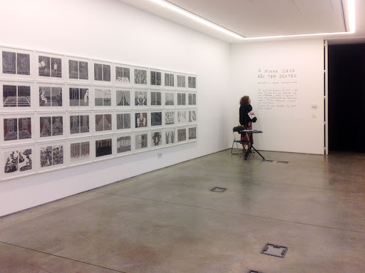
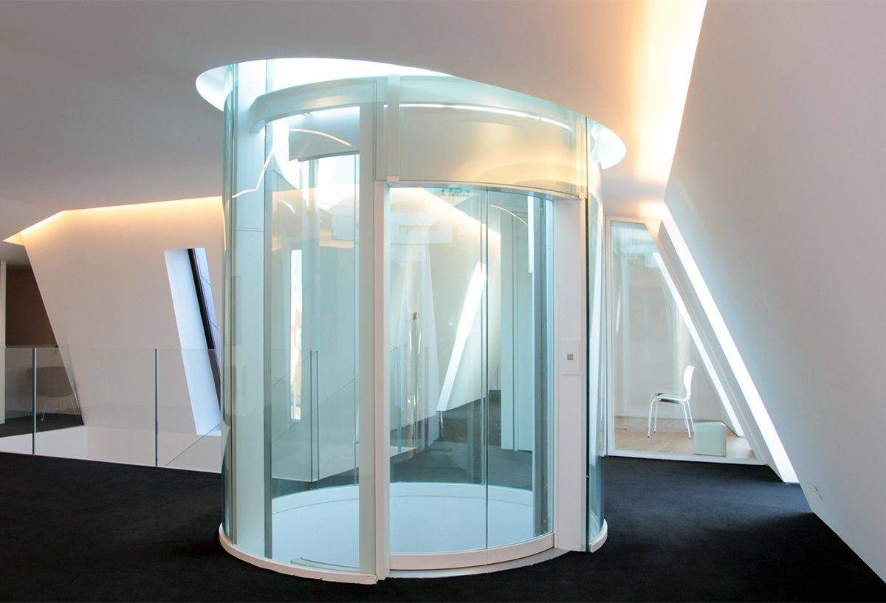
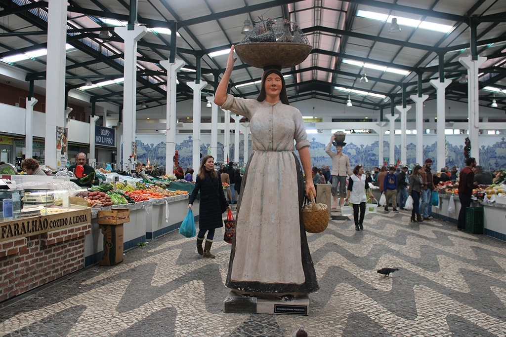
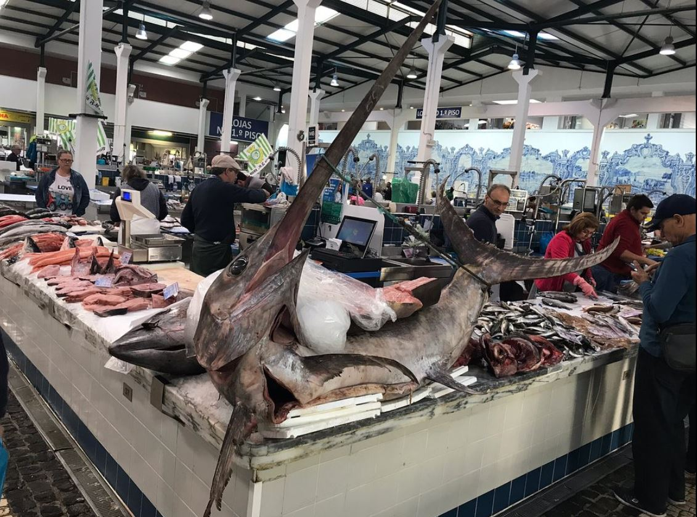
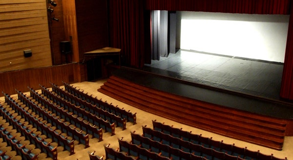
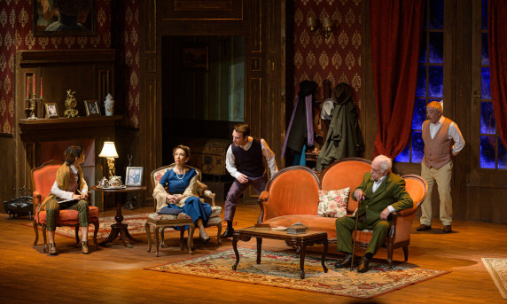

"Culture House"


Culture House
The Casa da Cultura is a driving force behind the artistic activity developed in the municipality,
bringing together different aspects that are at the service of the associative movement and, mainly, of the population.
The property where the Casa da Cultura is located hosted the emblematic Circle for decades
Cultural of Setúbal.
The meaning and breadth of the intervention activity of this association in the cultural and
City's artistic history gave the building an unavoidable history.
Source: https://visitsetubal.com/um-mundo/cultura/casacultura/
"Livramento Market"


Livramento Market
Built to replace another market, demolished in 1876, it opened in 1930.
The interior was completely remodeled after refurbishing the facilities carried out between 2010 and 2011.
The tile panels in the interior stand out, depicting the various economic activities of the city, designed by the Portuguese engraver and painter Pedro Pinto, dating from 1929.
At the north entrance, on both sides, there are two other panels by Rosa Rodrigues, with images of the city, dating from 1944.
In June 2014, the North American magazine USA Today recognized Mercado do Livramento as one of the best fish markets in the world.
Source: https://www.mun-setubal.pt/mercado-do-livramento/
"Luísa Todi Municipal Forum"


Luísa Todi Municipal Forum
Is the largest concert hall in the municipality of Setúbal.
After undergoing a renovation project which completely modernised the building,
it reopened its doors to the public in 2012.
It includes a broad range of facilities to accommodate a wide variety of artistic events,
as well as initiatives of a different kind, such as conferences and seminars.
Source: https://visitsetubal.com/en/one-world/cultura_en/forum-municipal-luisa-todi_en/